Muttseehütte SAC
July 6, 2021 by Pat and Bruno ‐ 5 min read
| Difficulty | T3 |
|---|---|
| ⇄ Distance | 11.2 km |
| ↑ Up | 730 m |
| ↓ Down | 730 m |
| Notable Locations | Tierfed, Kalktrittli, Muttseehütte SAC, Muttenchopf, Limmerensee |
| Public Transit Access? | No |
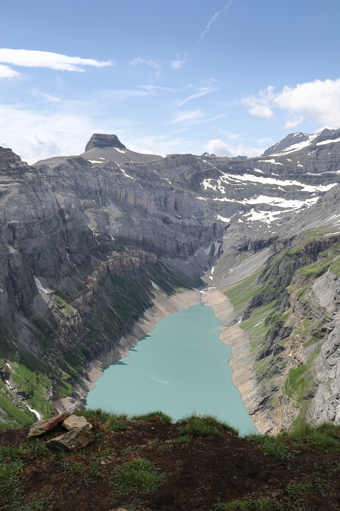
The
Quick Summary
- Take a (completely over-engineered) cable car from
Tierfed toKalktrittli . - From
Kalktrittli take the newly constructed path which has been blown out of the side of the mountain.- While the path is quite wide and very well maintained, it is
extremely exposed (near-vertical drop of around 800 m). - Being comfortable with heights is very important.
- While the path is quite wide and very well maintained, it is
- Hike up towards the
Muttenwändli via theNüschentäli .- A few small snowfields to cross, even in the summer.
- Coffee and Wähe at the
Muttseehütte SAC . - Quick pit-stop on the
Muttenchopf . - Descent to the
Limmerensee . - Return via the
access tunnel used for constructing the dams at the Limmerensee and the Muttsee.
Kalktrittli
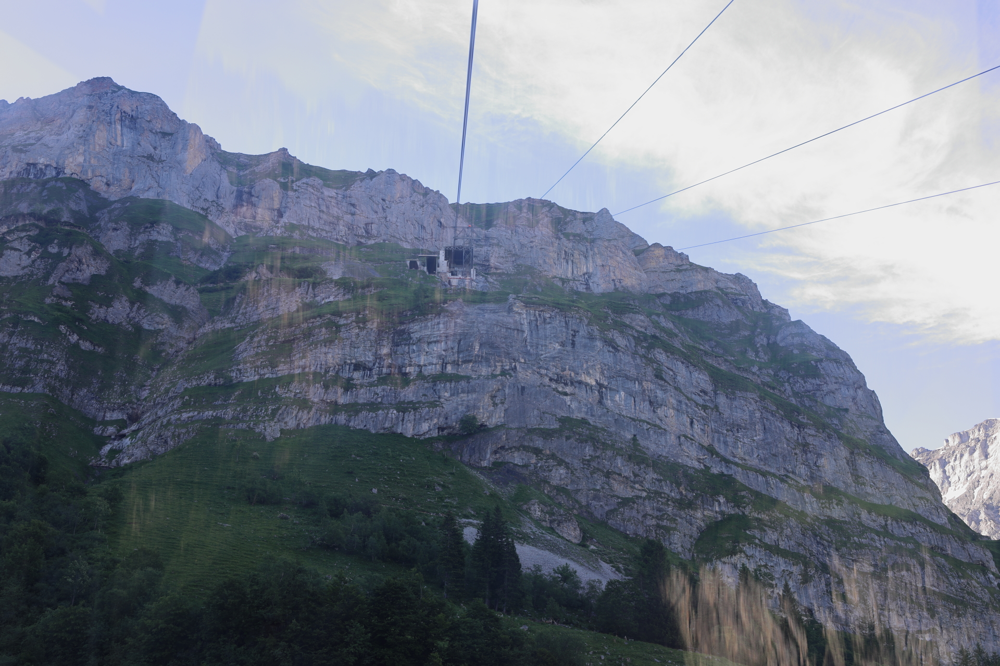
Taking the cable car up from
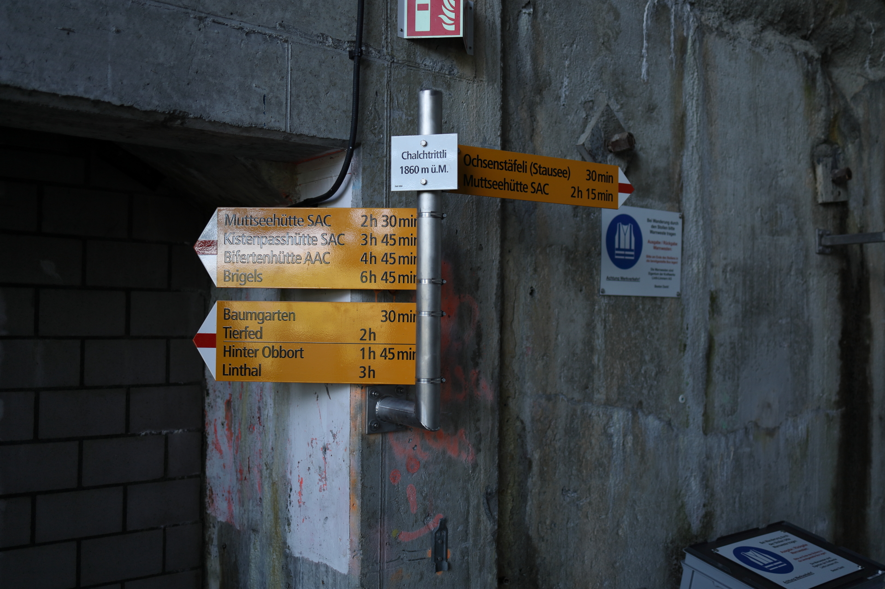
There are only two official paths that lead to the
 Inside the very industrial looking "Bergstation" for the cable car. Literally looks like we're hanging out in the secret hideout for a James Bond villain. You can tell this place wasn't initially built with tourism in mind.
Inside the very industrial looking "Bergstation" for the cable car. Literally looks like we're hanging out in the secret hideout for a James Bond villain. You can tell this place wasn't initially built with tourism in mind.
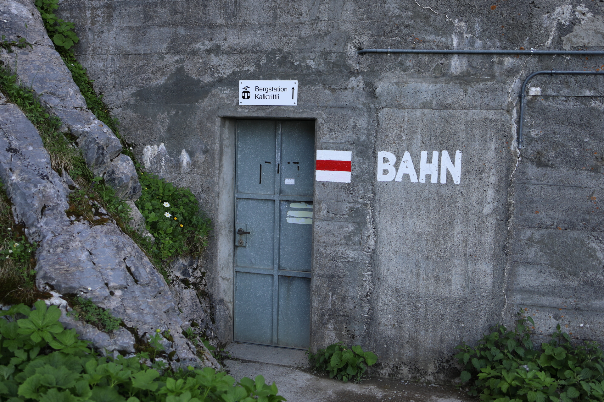 The slightly ominous looking door leading to the cable car.
Nüschentäli to the Muttseehütte
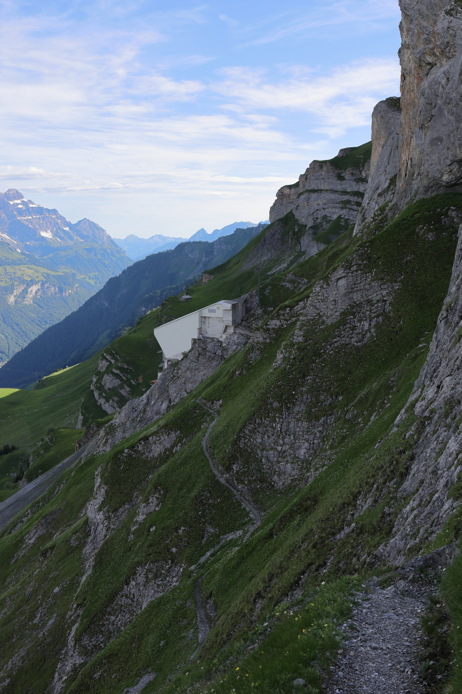
The
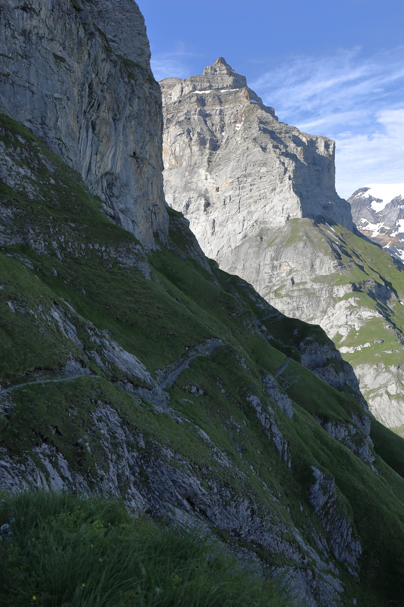 The view forwards towards the Limmerentobel (valley where the sunlight is coming in from). According to the topography map, it would be around an 800 m drop if you were to fall here. Definitely watch your step.
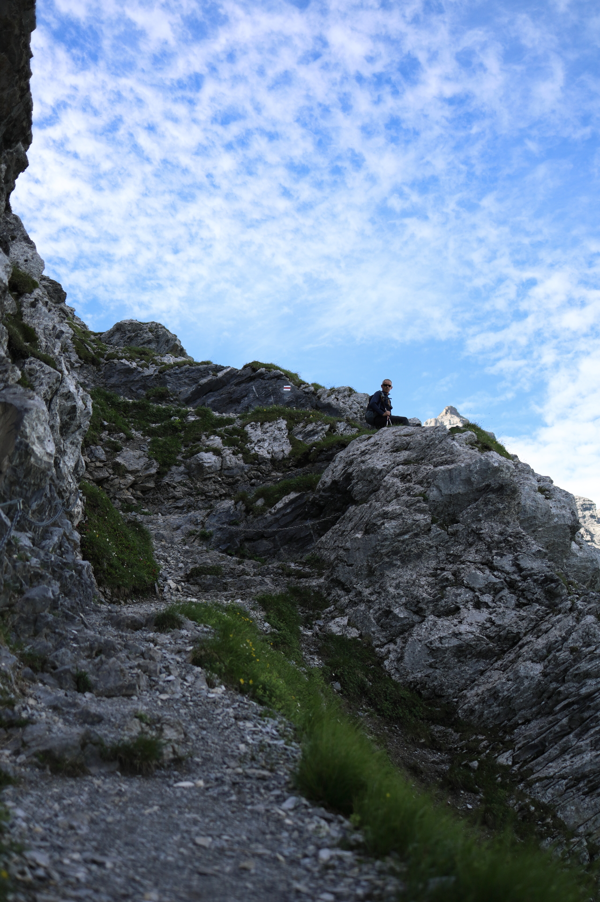 There are a few very short passages like this which are secured by some chains. They definitely wouldn't have been necessary, but it helps to make the ascent a little more relaxed.
 Looking from the Vorder Nüschenegg towards the
Looking from the Vorder Nüschenegg towards the
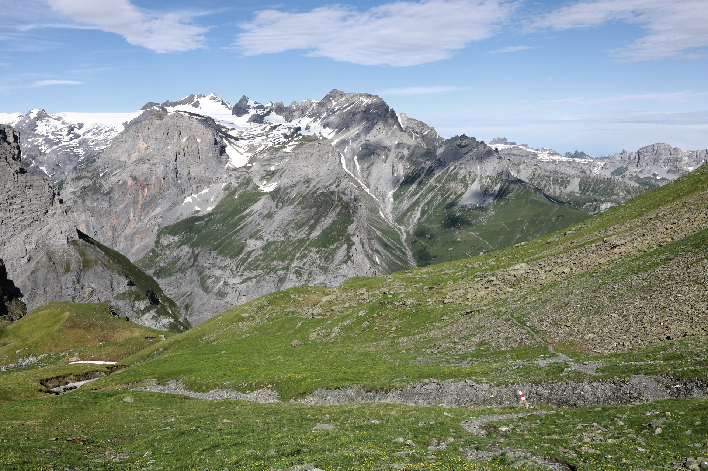
A view from the
 A few snowfields still hanging around despite it being mid-summer. Nothing too problematic though.
A few snowfields still hanging around despite it being mid-summer. Nothing too problematic though.
 It always seems like magic to me that moss campion is able to thrive in these extremely rocky areas where seemingly nothing else wants to grow. Truly beautiful.
It always seems like magic to me that moss campion is able to thrive in these extremely rocky areas where seemingly nothing else wants to grow. Truly beautiful.
 Our first view of the
Our first view of the
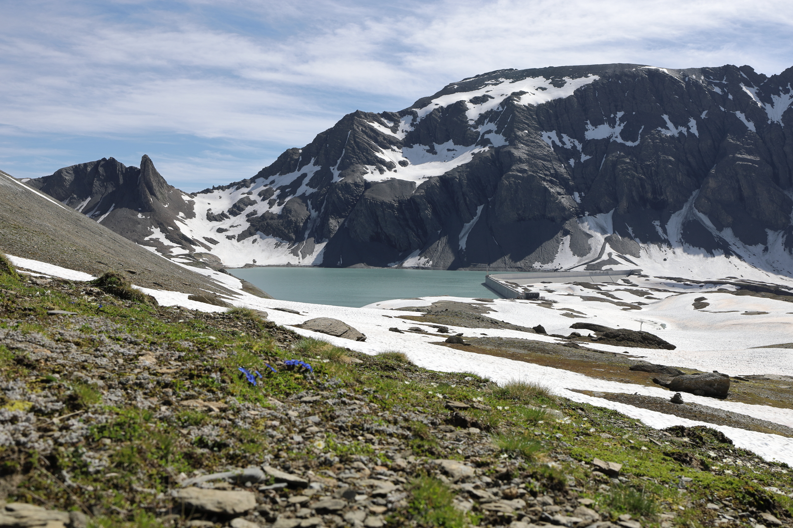
The
 At the
At the
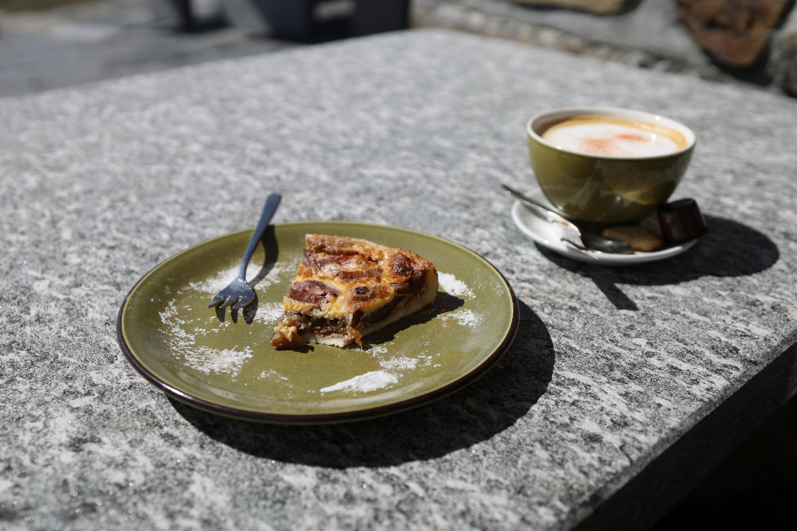 Refueling with some delicious Wähe and coffee.
Muttenchopf and the Limmerensee
 After we'd finished our coffee, we continued on towards the
After we'd finished our coffee, we continued on towards the
 This glacial valley is absolutely incredible. It's uncommon to find these sorts of fjord-like valleys in Switzerland. The
This glacial valley is absolutely incredible. It's uncommon to find these sorts of fjord-like valleys in Switzerland. The
The view down to the
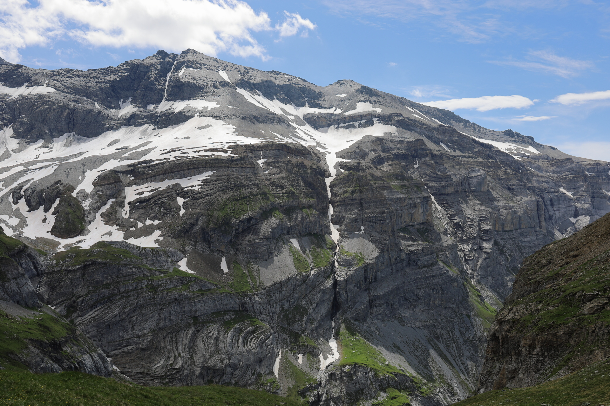 This is the kind of place I imagine Swiss geology students go to for fieldwork. Apart from all of the well defined folds and numerous faults, the offset layer to the left of the snow covered gully might be the most spectacular textbook example of a reverse fault I have ever seen.
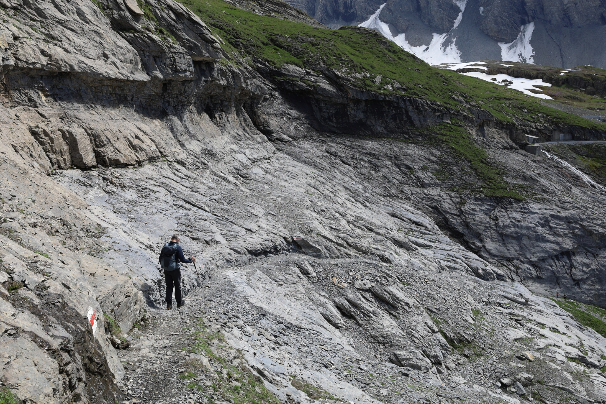
Making our way down towards the
 Another view down towards the Limmerensee.
Another view down towards the Limmerensee.
 Plenty of alproses to add some colour to the somewhat rocky terrain.
Plenty of alproses to add some colour to the somewhat rocky terrain.
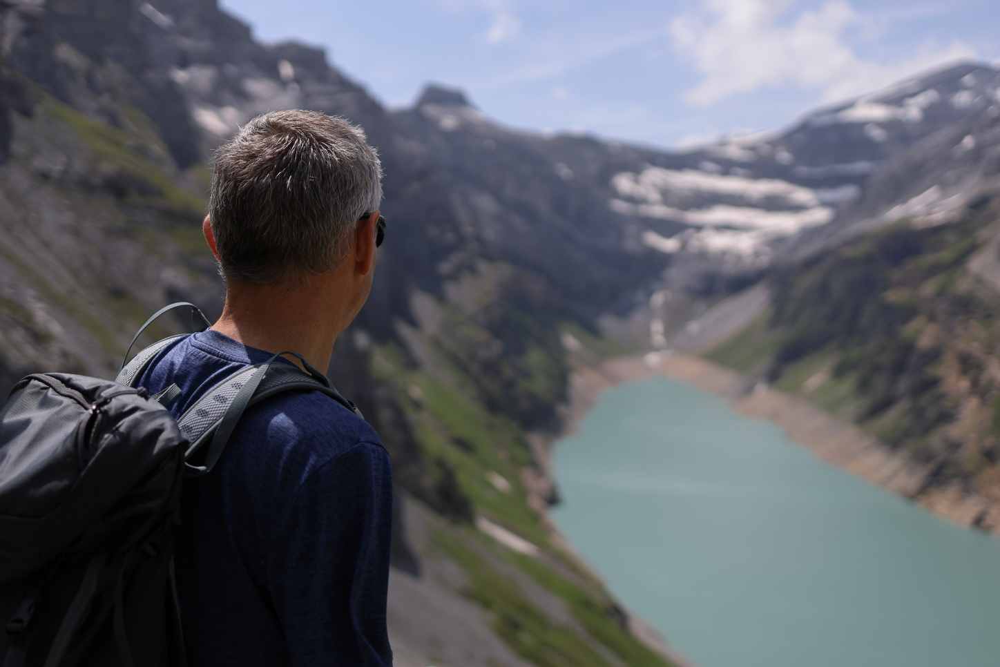 This place is so peaceful. We had the trail almost entirely to ourselves.
 A short scrambling passage secured by chains. It's not at all exposed though.
A short scrambling passage secured by chains. It's not at all exposed though.
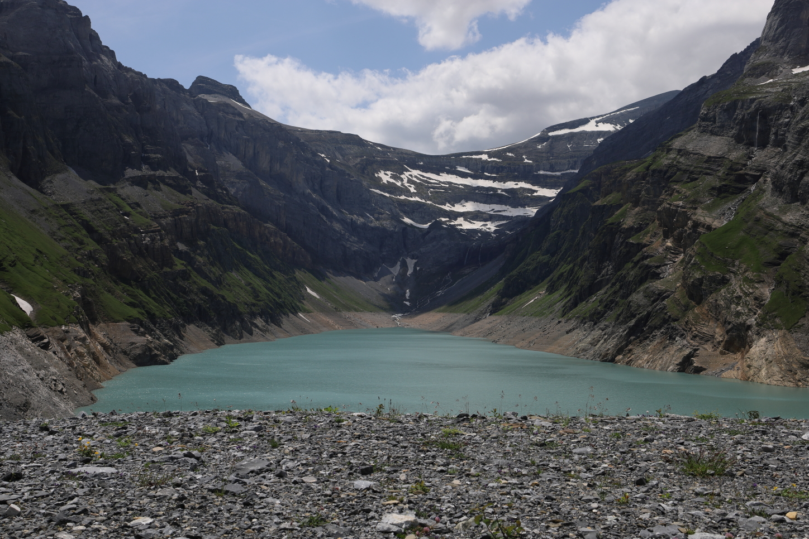
Finally down at the
Return Through the Access Tunnel
 Pretty neat that they make this accessible to the public. It is also quite a nice shortcut without which this hike would likely not have been doable in a day.
Pretty neat that they make this accessible to the public. It is also quite a nice shortcut without which this hike would likely not have been doable in a day.
 There are some pretty neat little side tunnels you can explore here as well. This particular one lets you go onto the dam at the end of the Limmerensee.
There are some pretty neat little side tunnels you can explore here as well. This particular one lets you go onto the dam at the end of the Limmerensee.
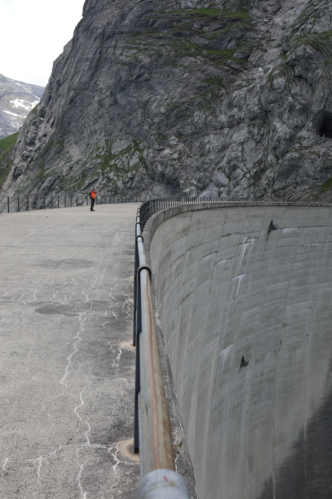 It really is pretty incredible what's possible to build using the state of the art in engineering.
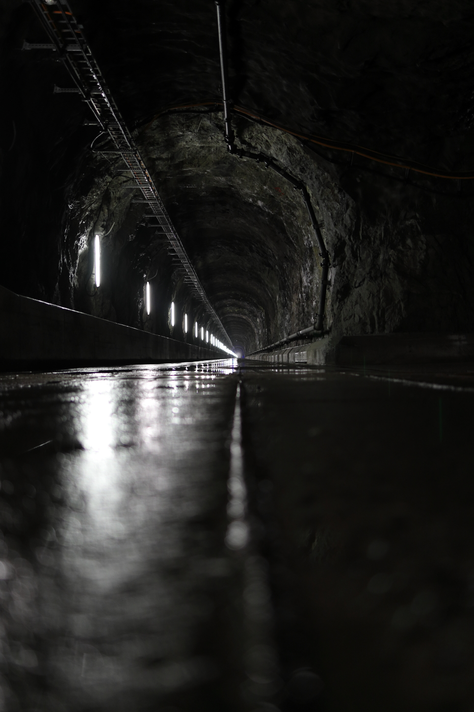
The relatively long return back to the cable car. This tunnel leads directly back to the "James Bond villain lair" where you can get a cable car back down to